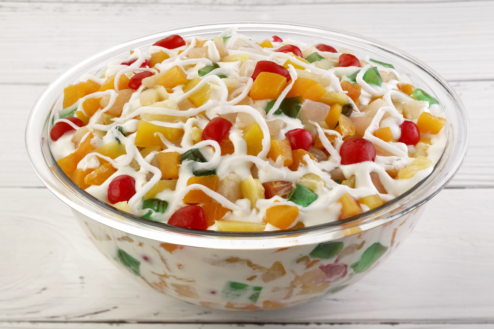

Fruit Salad Recipe

Video Tutorial: Fruit Salad Recipe Video
Fruit Salad is a delightful and refreshing dessert enjoyed by many during the Christmas season. Here's how to make it:
Ingredients:
- 2 cups mixed fruits (canned fruit cocktail or fresh fruits such as apples, grapes, pineapple, and peaches)
- 1 cup all-purpose cream
- 1/2 cup condensed milk
- 1/2 cup kaong (sugar palm fruit)
- 1/2 cup nata de coco (coconut gel)
- 1/2 cup canned pineapple chunks
- 1/2 cup sliced peaches
- 1/2 cup seedless grapes
- 1/2 cup apple, diced
- 1/2 cup fruit cocktail syrup
- Maraschino cherries for garnish (optional)
Instructions:
- In a large mixing bowl, combine all the fruits, kaong, and nata de coco.
- Add in the all-purpose cream and condensed milk.
- Gently fold until all the fruits are evenly coated with the cream mixture.
- Chill the fruit salad in the refrigerator for at least 1 hour before serving.
- Before serving, drizzle fruit cocktail syrup over the fruit salad.
- Garnish with maraschino cherries, if desired.
- Serve chilled and enjoy your refreshing Fruit Salad!